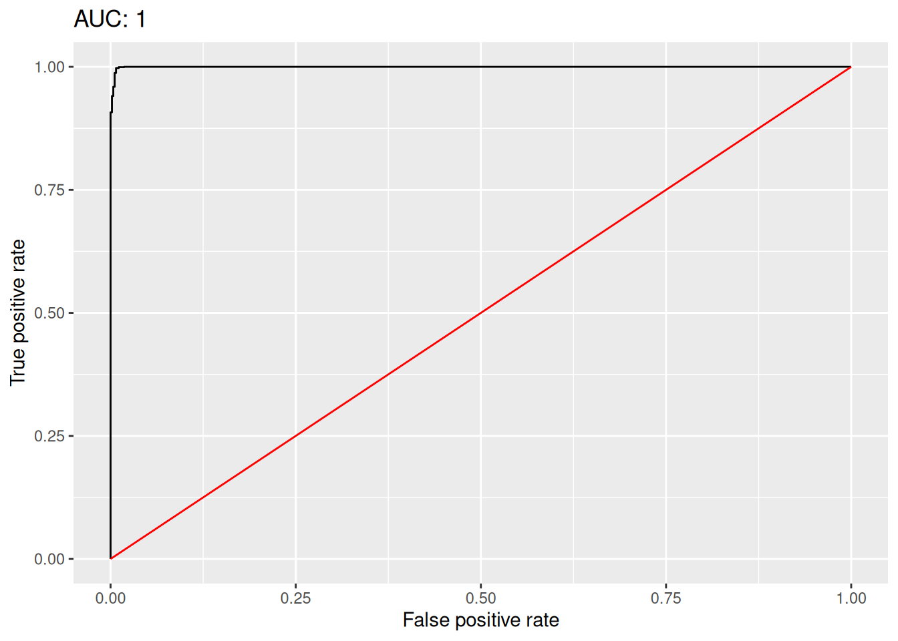

python -m venv venv
source venv/bin/activate # On Windows: venv\Scripts\activate
pip install tabpfnFitting TabPFN models in R using reticulate
Introduction
TabPFN is a foundational model for tabular data, which can be used instead of models like XGBoost and random forest for predictive modelling using tabular data. It was recently introduced in a paper in Nature by Hollmann et al. The results in that paper indicate that it can yield better results than current state-of-the-art machine learning models in a wide range of settings.
TabPFN is currently only available for Python. An R package is reportedly in the works. However, using the reticulate package, we can already run it from R. The aim of this short tutorial is to show how this can be done, and how to reformat R data to work with TabPFN.
This tutorial uses the packages reticulate, dplyr, and ggplot2. In addition palmerpenguins and modeldata are used for datasets. Some familiarity with R and machine learning is assumed (have a look at my book Modern Statistics with R in case you need to brush up on your skills!).
Setting up TabPFN for use with R
First, install the reticulate package and Python.
In a terminal, create a virtual environment (venv), activate it, and install TabPFN:
Next, download the two .py scripts from the TabPFN_in_R GitHub repo.
That’s it - we’re now ready to go! To get started, open R, load reticulate and run the two Python scripts, which make classifiers and regression models based on TabPFN available in R.
Make sure to change the use_virtualenv() line below so that the path points to the folder where you created your venv.
library(reticulate)
use_virtualenv("~/R/venv")
# Source the Python code for training TabPFN models:
source_python("train_classifier.py")
source_python("train_regression.py")Example 1: binary classification
Here, we’ll use wine data from Cortez et al. (2009), available from the UCI Machine Learning Repository.
library(dplyr)
white <- read.csv("https://tinyurl.com/winedata1",
sep = ";") |> mutate(type = "white")
red <- read.csv("https://tinyurl.com/winedata2",
sep = ";") |> mutate(type = "red")
white |> bind_rows(red) -> wineThere are two types of wine: white and red. The aim is to classify the colour of the wine based on its chemical properties.
We split the data into two data frames, one with predictors (X) and one with labels (y):
X <- wine |> select(-type)
y <- wine |> select(type)We can now train and evaluate the model. We specify that "white" is the positive class (this is required for computing ROC curves):
model <- train_classifier(X, y, pos_label = "white")The evaluation metrics are:
model$auc[1] 0.9996096model$accuracy[1] 0.995338The model object also contains FPR and TPR values that we can use to plot an ROC curve as follows:
library(ggplot2)
roc_data <- data.frame(fpr = model$roc[1][[1]], tpr = model$roc[2][[1]])
ggplot(roc_data, aes(fpr, tpr)) +
geom_line() +
geom_line(data = data.frame(fpr = c(0, 1), tpr = c(0, 1)), colour = "red") +
labs(x = "False positive rate",
y = "True positive rate",
title = paste("AUC:", round(model$auc, 3)))
By default, TabPFN uses 33 % of the data for training. You can change this using the test_size parameter:
model <- train_classifier(X, y,
pos_label = "white",
test_size = 0.66)Example 2: multiclass classification
We’ll now use the Palmer penguins data from Data from Gorman et al. (2014), available in the palmerpenguins package.
TabPFN require missing values to be denote by NaN, and categorical variables to be represented as characters. Missing categorical variables should be represented by an empty string. Let’s modify our data to follow those requirements (as strange as they may seem to R users!):
data(penguins, package = "palmerpenguins")
penguins |>
mutate_if(is.factor, as.character) |>
mutate(sex = if_else(is.na(sex), "", sex)) ->
penguins
penguins[is.na(penguins)] <- NaNNext, we split the data into predictors and outcomes and train the model:
X <- penguins |>
select(bill_length_mm, bill_depth_mm, flipper_length_mm, body_mass_g, sex) |>
mutate(sex = as.character(sex))
y <- penguins |>
select(species) |>
mutate(species = as.character(species))
model <- train_classifier(X, y)The accuracy is pretty good:
model$accuracy[1] 0.9912281Example 3: regression
To illustrate how to fit a regression model, we’ll use the Ames housing data from Data from De Cock (2011), available in the modeldata package.
As in the previous example, we need to convert factors to characters:
data(ames, package = "modeldata")
ames |>
mutate_if(is.factor, as.character) ->
amesWe can then split the data and train the model:
X <- ames |> select(-Sale_Price)
y <- ames |> select(Sale_Price)
model <- train_regression(X, y)Finally, we can review the RMSE, MAE and R2 of the model:
model$RMSE[1] 20474.93model$MAE[1] 12292.65model$R2[1] 0.9376683That’s all. Hopefully we can look forward to a native R package and integration with frameworks like tidymodels in the future. Meanwhile, I hope that you have fun playing around with the examples above. Feel free to propose changes in the GitHub repo.